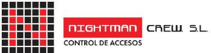
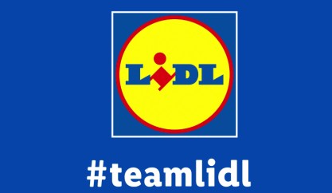
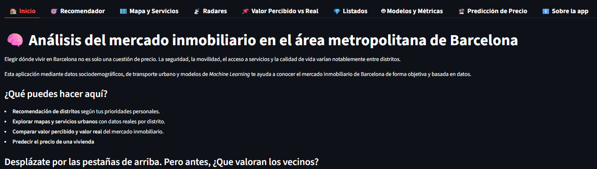
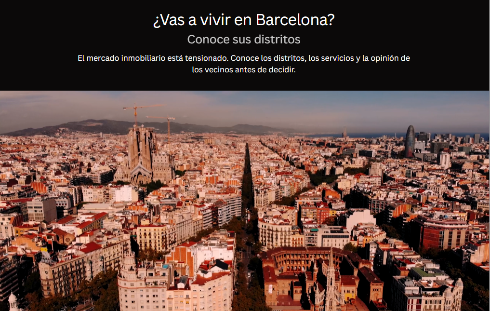
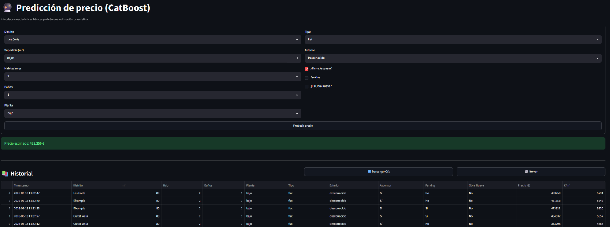
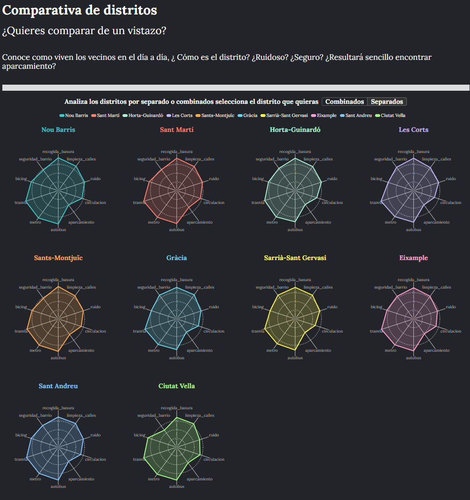
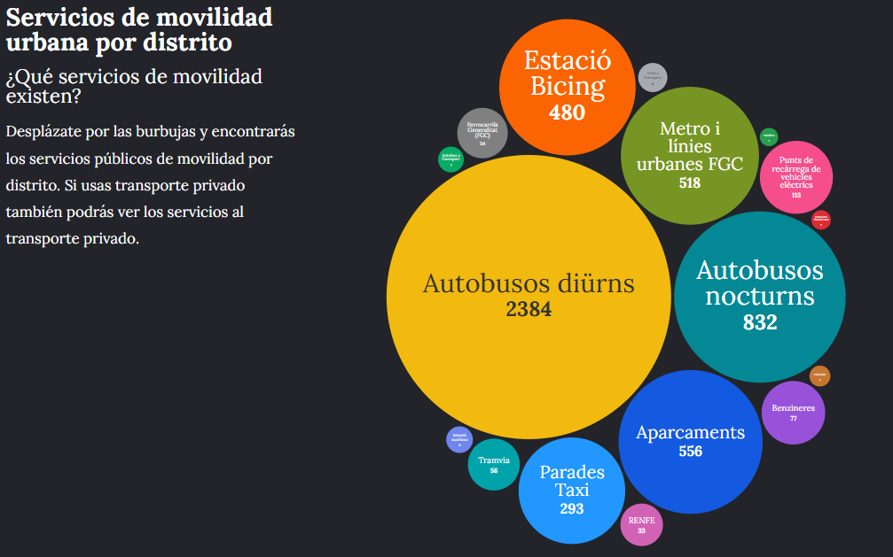

Etapa inicial
Controlador de Accesos
Primer contacto con la operativa de seguridad, control, atención al público y gestión de accesos.
Perfil ejecutivo-tecnológico
Data Science · Leadership · Security
Transformando datos, experiencia operativa y liderazgo en decisiones estratégicas y resultados medibles.
Trayectoria profesional
Una evolución construida desde posiciones de primera línea hasta perfiles de liderazgo, seguridad especializada y analítica avanzada.
Primer contacto con la operativa de seguridad, control, atención al público y gestión de accesos.
Experiencia en seguridad aeroportuaria, inspección, control de accesos y coordinación operativa.
Formación directiva especializada en seguridad, normativa, gestión de riesgos y protección.

Dirección operativa, coordinación de servicios y gestión de equipos en entornos de alta exigencia.
Responsabilidad en cumplimiento, coordinación, procesos y supervisión de operaciones.

Gestión de equipos, KPIs, formación, organización operativa y orientación a resultados.
Formación universitaria en programación, estadística, machine learning, bases de datos y visualización.
Especialización en analítica avanzada, modelos predictivos, IA y toma de decisiones basada en datos.
Aplicación interactiva para analizar el mercado inmobiliario del área metropolitana de Barcelona.
Abrir aplicación →Ciencia de Datos
Formación universitaria en Ciencia de Datos combinada con experiencia real en operaciones, equipos y toma de decisiones.

Proyecto destacado · TFM
Aplicación desarrollada con técnicas de Machine Learning, visualización avanzada y análisis multivariable para explorar distritos, servicios urbanos, percepción vecinal y predicción de precios.




Leadership & Sales
Experiencia en gestión de equipos, planificación operativa, seguimiento de KPIs, reporting, formación y optimización de procesos.
Experiencia actual en liderazgo comercial, gestión operativa y consecución de objetivos.
Security & AVSEC Training
Trayectoria en seguridad desde la operativa de primera línea hasta dirección, cumplimiento normativo y formación AVSEC.
Formación especializada en seguridad aeroportuaria y certificaciones emitidas por AESA.
Dirección, coordinación de servicios y gestión de equipos en entornos complejos.
Capacidad para diseñar, impartir y acompañar procesos formativos en seguridad.
Experiencia en supervisión, procesos, normativa y responsabilidad operativa.
Reconocimientos
Ganador del concurso My Idea en Lidl con una solución orientada al análisis del comportamiento del cliente en tienda y generación de insights operativos.
“Liderazgo, capacidad analítica, adaptación y profesionalidad en entornos de alta responsabilidad.”
Cartas de recomendación disponibles